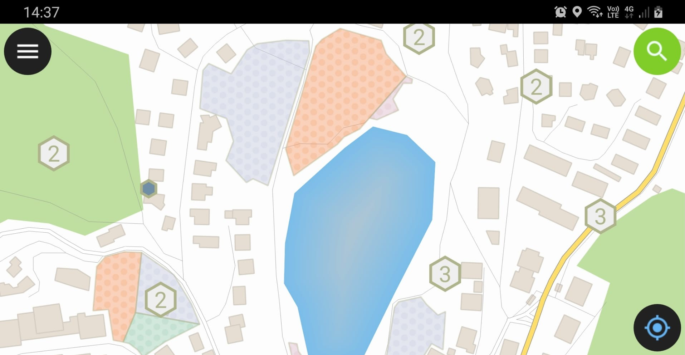
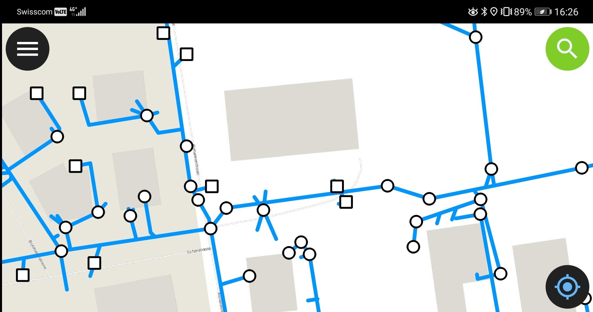
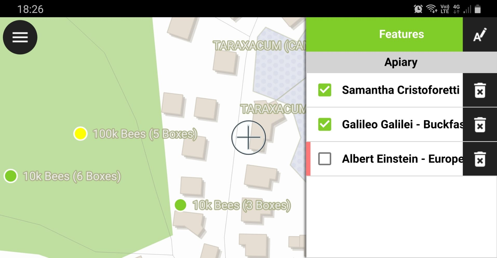
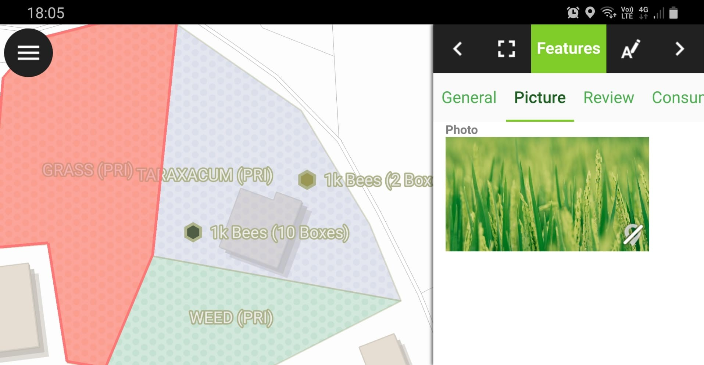
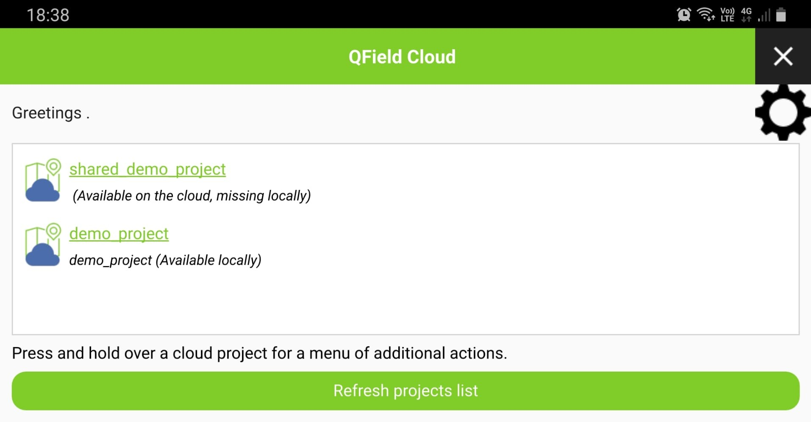
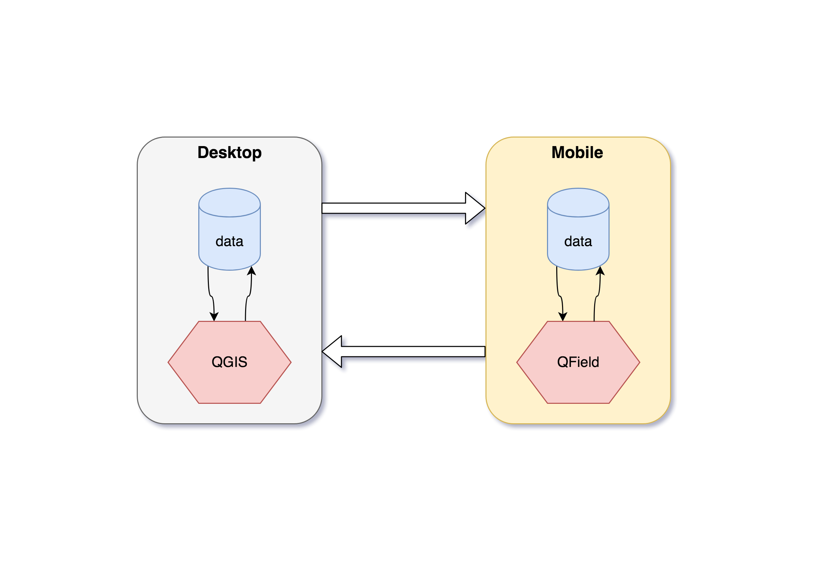
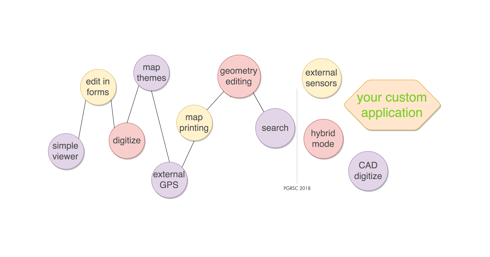

Because data is outside
QField, the future of QGIS on mobile devices
 MARCO BERNASOCCHI
MARCO BERNASOCCHI
@mbernasocchi
@OPENGISch Co-founder & CEO
@QGIS Chair
@QFieldForQGIS Father
Open source Geoninjas
Made in Switzerland
@OPENGISch L[i|o]ves open source
Why QField?

Because
data is
outside the office
What is QField?
The mobile data collection app for QGIS
Minimalist UI
Beautiful cartography
Efficient interaction
 Powerful tools
Powerful tools
Beneficial integrations
Cloud ready
What can I do with QField?
Comfortably prepare the work on your QGIS desktop once.
Efficiently work on your GIS data outdoor.
What is in QField?
 QGIS experience
Made for touch
Powerful features
QGIS experience
Made for touch
Powerful features
 QGIS Forms
Drag and drop designer
Conditional visibility
Attribute constrains
Default values
Take picture
QGIS Forms
Drag and drop designer
Conditional visibility
Attribute constrains
Default values
Take picture
 Digitize and edit
points, lines, polygons
Z coordinates
Snapping
Internal or external GPS
Digitize and edit
points, lines, polygons
Z coordinates
Snapping
Internal or external GPS
 Attribute search
Only in searchable layers
In display expression
Zoom to result
Attribute search
Only in searchable layers
In display expression
Zoom to result
What workflows can I have?

The explorer
The lone ranger

Online (live) editing

Offline editing

Custom applications
And action!
Mapthemes
Constraints
Digitising with picture
Printing PDF
Editing geometries
Roadmap
Version 1.1 is here
Your custom app

Join
the effort